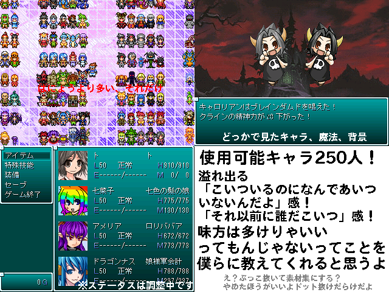

| No.10 | 250人出せばよかろうなのだ！ | 容量：0bit | ||
|
 | ||||
| 作者：はたかい | ジャンル：オフラインなソーシャルゲーム 使用ツール：2000 | 配信：可 動画：可 | 感想掲示板 | |
| コメント： モバマスっぽいゲーム作ろうとしたけど処理がアホすぎてメモリストリームやフリーズを連発するからデフォ戦になりました 一応キャラのデータは220人超をそのまま流用して、せっかくだからかなり最近のキャラも何人か追加した結果 使用可能なキャラは現在250人、敵を含めるとそれ以上です エターのお詫びと言ってはなんですが感想掲示板に出して欲しいキャラを書くと 矛倉と顔倉さえ用意出来れば追加するかもしれません 好きなマイナーキャラをやるゲに出したい！という方はぜひ | ||||
|
管理者からのコメント： ではあのキャラも出してもらおうか | ||||
|
最近の更新： 7/23：作品名、SS変更。 7/3：公開。 | ||||